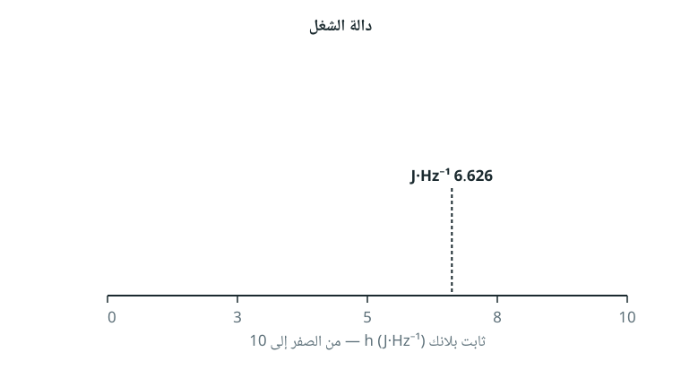

دالة الشغل
Work function
دالة الشغل هي أقل طاقة يلزم منحها لإلكترون ليخرج من سطح معدن صلب إلى الفراغ، ورمزها Φ ووحدتها الإلكترون-فولت، وتحدد عتبة التردد في الظاهرة الكهروضوئية.
دالة الشغل Φ لمادة صلبة هي أقل طاقة لازمة لإزالة إلكترون من مستوى فيرمي إلى الفراغ خارج السطح عند الصفر المطلق. وتُقاس عادة بالإلكترون-فولت (eV). وهي خاصية للسطح لا للكتلة: تعتمد على المادة وعلى الوجه البلوري وعلى الشوائب الممتزة. في الظاهرة الكهروضوئية، لا ينطلق إلكترون إلا إذا كانت طاقة الفوتون الساقط أكبر من دالة الشغل: hν ≥ Φ، وعتبة التردد ν₀ = Φ/h. مثال: للصوديوم Φ ≈ 2.28 eV، فعتبة الطول الموجي λ₀ = hc/Φ = 1240/2.28 = 544 nm، أي ضوء أخضر-أصفر؛ ولا ينطلق إلكترون بضوء أطول من ذلك مهما كانت شدته.
كيف تعمل الظاهرة؟
في المعدن، تشغل الإلكترونات نطاقات طاقة متصلة حتى مستوى فيرمي. وللخروج من السطح يلزم الإلكترون طاقة إضافية للتغلب على الحاجز الكهروستاتيكي الناتج عن نقص الشحنة السالبة عند السطح، وعلى قوى الصورة الكهربائية التي تجذب الإلكترون العائد. مجموع هذه الطاقة هو دالة الشغل. وحين يسقط فوتون، تنتقل طاقته كاملة إلى إلكترون واحد (لا تُقسم)، فإن كانت أكبر من دالة الشغل خرج الإلكترون بالفرق طاقةً حركية. هذا التفسير هو ما فسّر لماذا لا تعتمد الطاقة الحركية العظمى على شدة الضوء بل على تردده وحده، وهو ما عجزت عنه الفيزياء الكلاسيكية الموجية.
العلاقة بالأرقام
Φ = E_vac − E_F بالإلكترون-فولت. وفي الكهروضوئية: K_max = hν − Φ، وν₀ = Φ/h، وλ₀ = hc/Φ. وبقيمة hc = 1240 eV·nm يكون λ₀(nm) = 1240/Φ(eV). مثال عددي: Φ = 2.28 eV → λ₀ = 544 nm؛ وفوتون 500 nm طاقته 1240/500 = 2.48 eV → K_max = 0.20 eV. و1 eV = 1.602 176 634×10⁻¹⁹ J.
مفاهيم متقاربة
يُفرَّق بين دالة الشغل وطاقة فيرمي: طاقة فيرمي تُقاس من قاع النطاق إلى أعلى مستوى مشغول، ودالة الشغل من مستوى فيرمي إلى الفراغ. ويُفرَّق بينها وبين جهد الانتزاع في الخلايا الكهروكيميائية: ذاك فرق جهد بين قطبين في محلول، وهذه طاقة سطح في فراغ. ويُفرَّق بينها وبين طاقة الارتباط للإلكترون في الذرة: تلك تخص مداراً محدداً في ذرة معزولة. والخطأ الشائع أن تُقرأ دالة الشغل كخاصية «للمادة» بلا تحديد السطح؛ قيم الجداول تخص وجهاً بلورياً معيناً في ظروف فائقة الفراغ.
حدود التطبيق
دالة الشغل خاصية سطحية تتأثر بطبقة ذرات ممتزة واحدة، فتنخفض مثلاً بامتزاز السيزيوم على التنغستن انخفاضاً كبيراً. لذلك تتغير القيمة بضغط الغاز المحيط وبدرجة نظافة السطح، ولا تُعطي القياسات في الهواء القيمة الحقيقية. ولا ينطبق المفهوم على السوائل ولا على الجزيئات المعزولة. وعند درجات حرارة عالية يظهر انبعاث حراري لا يحتاج فوتونات، ويوصف بمعادلة ريتشاردسون-دوشمان التي تحوي دالة الشغل في أسّها. وأخيراً في أشباه الموصلات تُستعمل «دالة شغل» معدّلة تعتمد على التشويب، وهي ليست خاصية ثابتة للمادة.

| الكمية | القيمة | المصدر |
|---|---|---|
| ثابت بلانك h | 6.626 070 15×10⁻³⁴ J·Hz⁻¹ | [1] |
| عتبة الطول الموجي للصوديوم (Φ ≈ 2.28 eV) | 544 nm | [2] |
المصادر
- 1 CODATA Value: Planck constant — NIST — CODATA 2022 recommended values (2024). physics.nist.gov/cgi-bin/cuu/Value?h · اطُّلع عليه 2026-11-21
- 2 CODATA Value: speed of light in vacuum — NIST — CODATA 2022 recommended values (2024). physics.nist.gov/cgi-bin/cuu/Value?c · اطُّلع عليه 2026-11-21
- 3 CODATA Value: elementary charge — NIST — CODATA 2022 recommended values (2024). physics.nist.gov/cgi-bin/cuu/Value?e · اطُّلع عليه 2026-11-21
استشهد بهذا المصطلح
الصيغتان مبنيتان من بيانات الصفحة نفسها: العنوان والتاريخ ورابط النسخة المنشورة.
دالة الشغل — Work function. (2026). ديوان المعرفة — انفراد. https://infiradev.com/diwan/terms/term-work-function.html
@misc{term-work-function2026,
title = {دالة الشغل},
titleaddon = {Work function},
howpublished = {{ديوان المعرفة — انفراد} — مرجع علمي عربي},
year = {2026},
url = {https://infiradev.com/diwan/terms/term-work-function.html},
urldate = {2026-11-26},
note = {مراجعة علمية: hermes (مراجعة معتمدة 2026-11-26)}
}
راجعه: hermes (مراجعة معتمدة 2026-11-26) · 2026-11-26 · آخر تحديث 2026-11-21